Escolha bem o espelho O espelho é uma peça que não pode faltar no banheiro. Se quiser dar mais amplitude ao espaço, coloque um espelho que ocupe grande parte da parede. Mas se a intenção é dar mais personalidade ao banheiro, escolha uma peça diferente: redonda, antiga, colorida ou com alça de couro.


 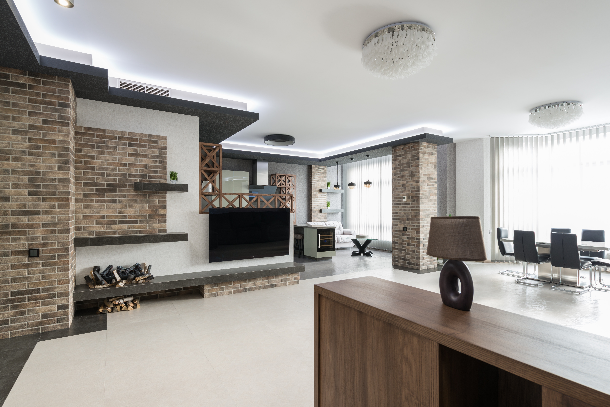
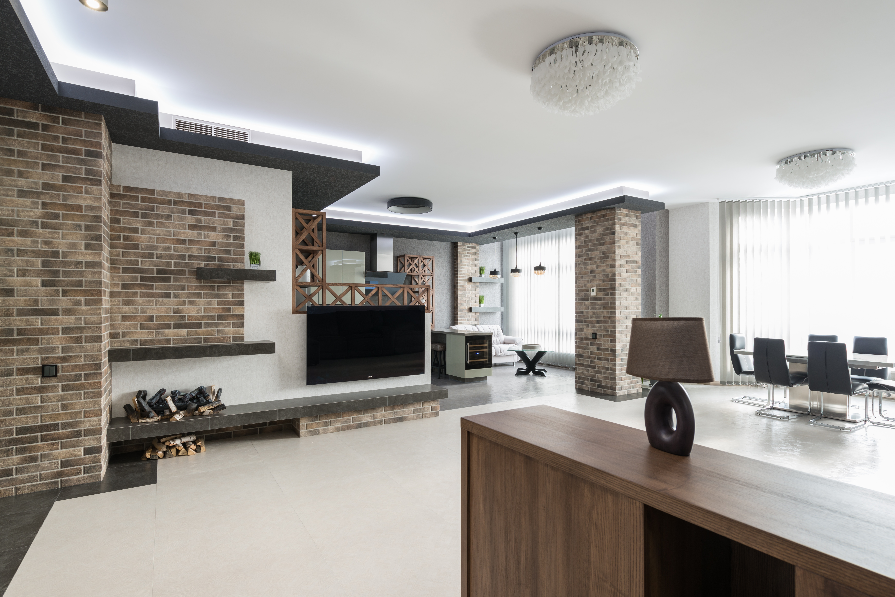


 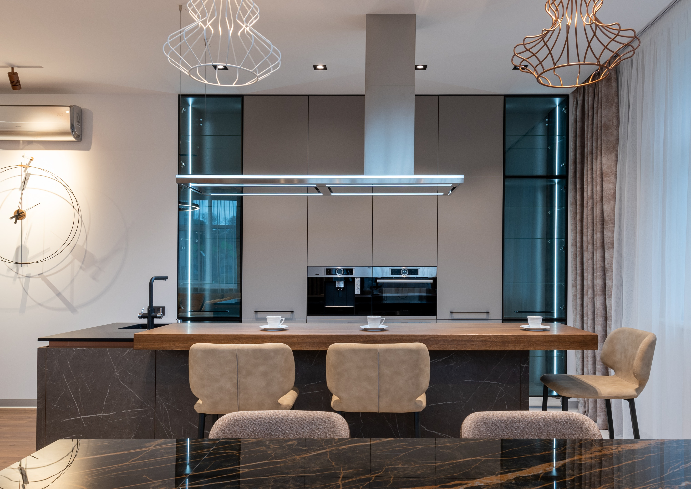
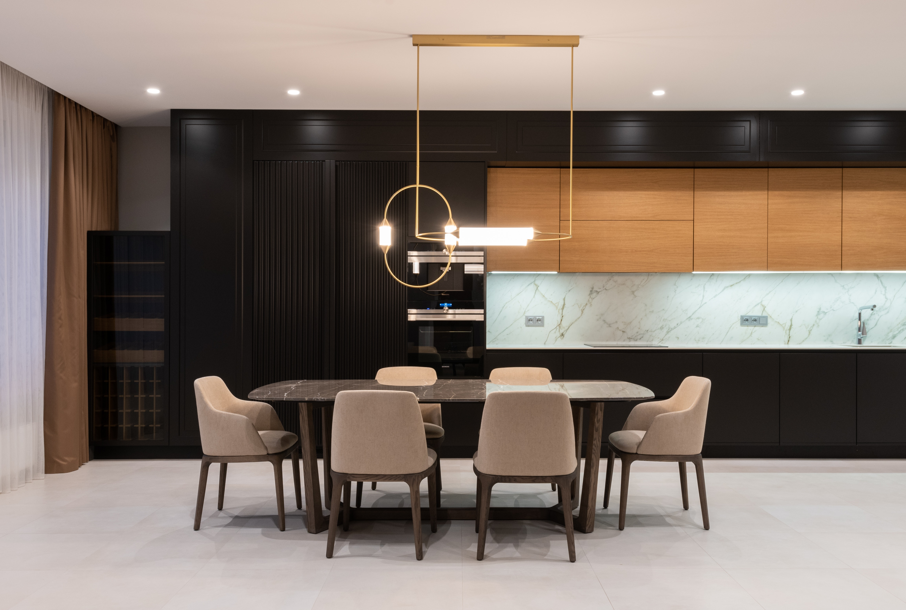
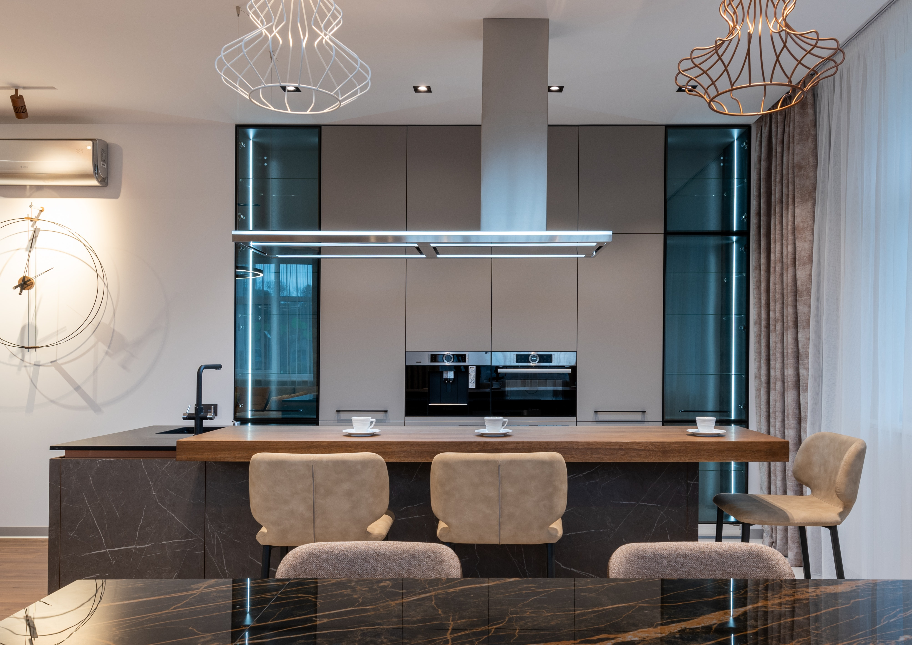
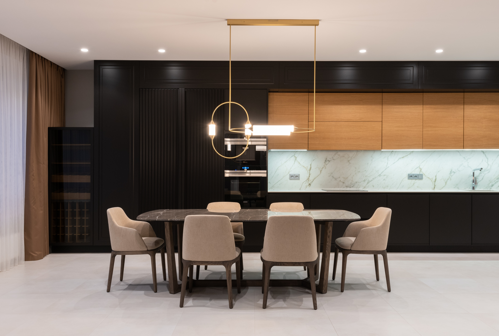


 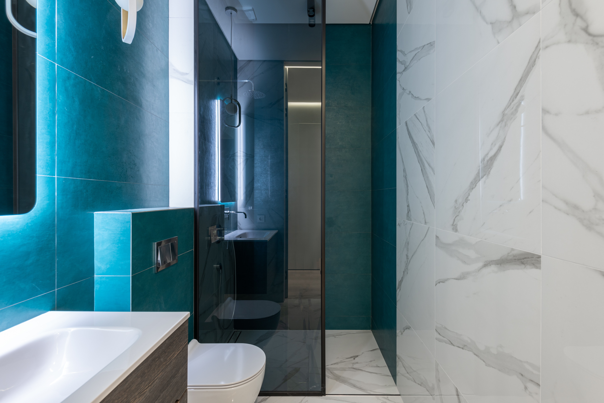
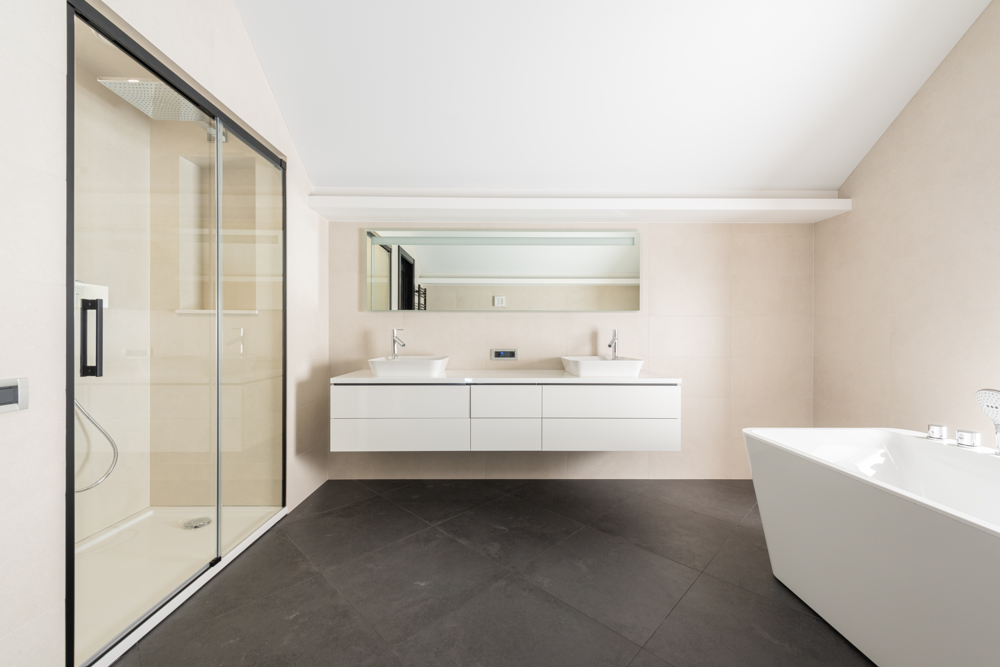
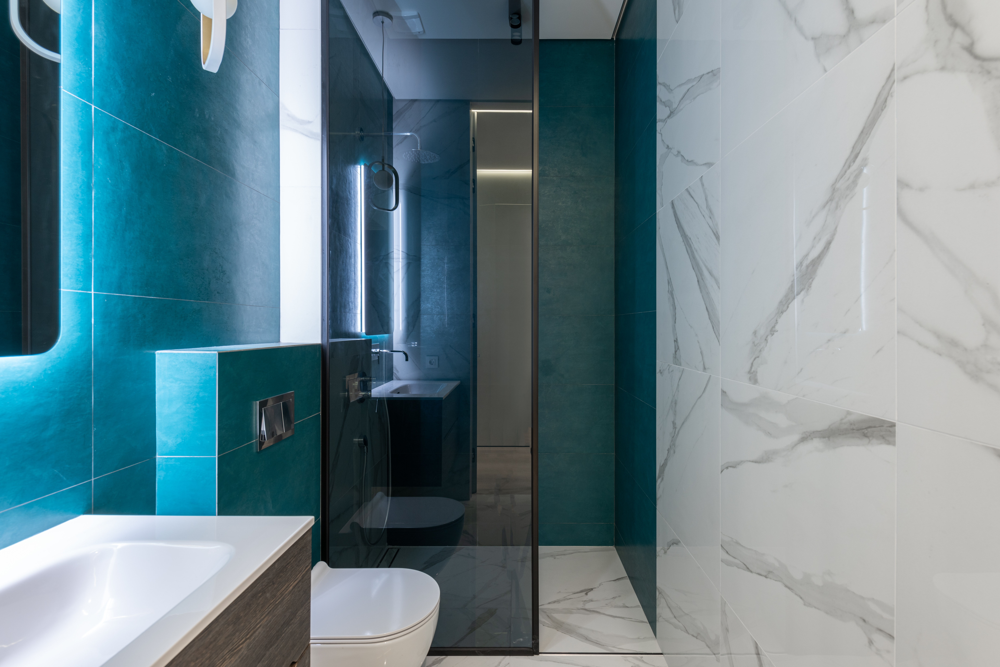
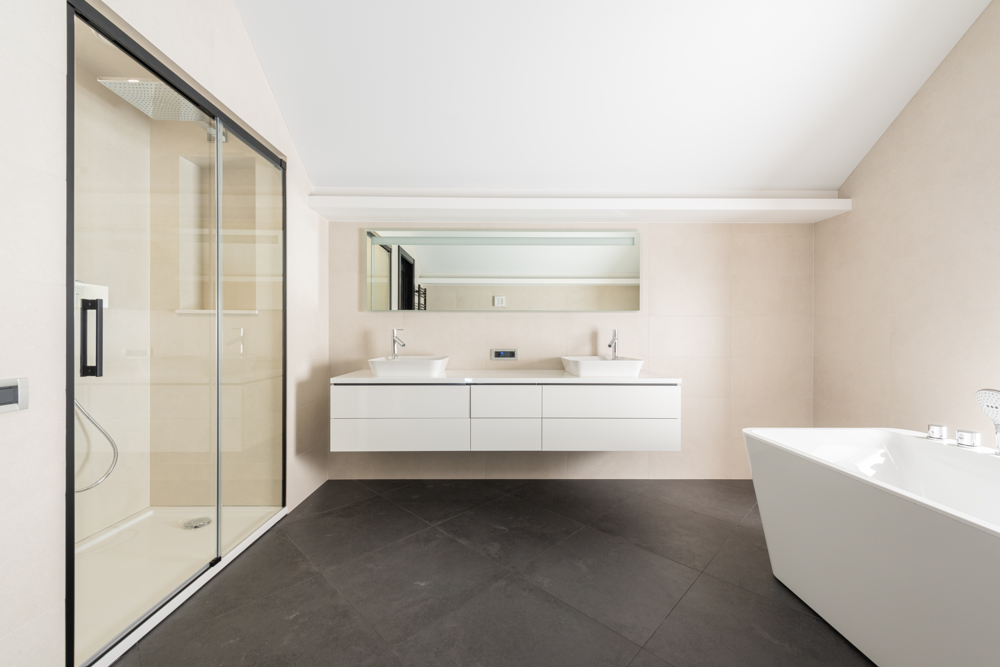
 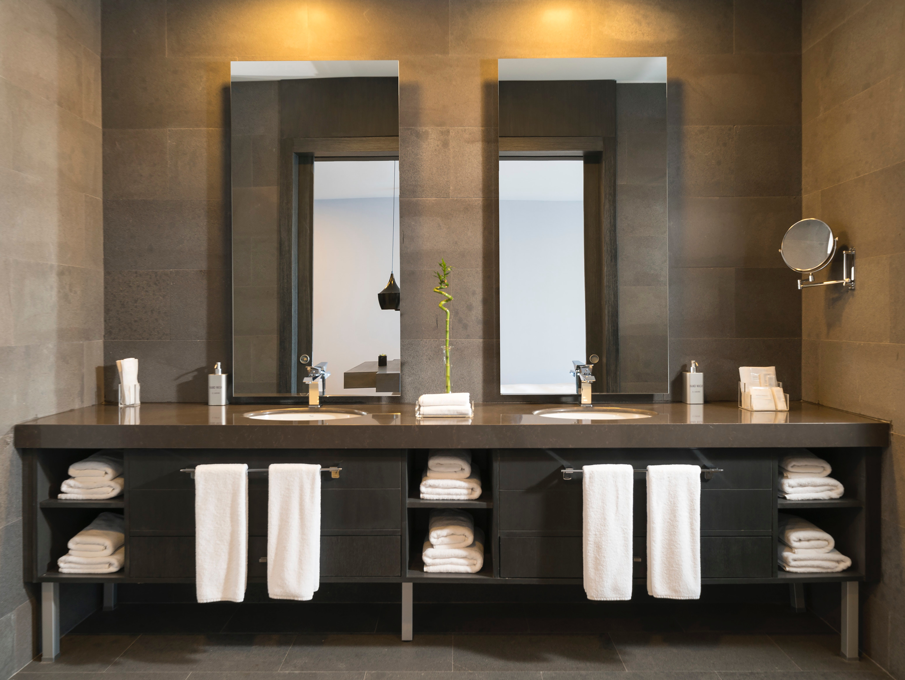
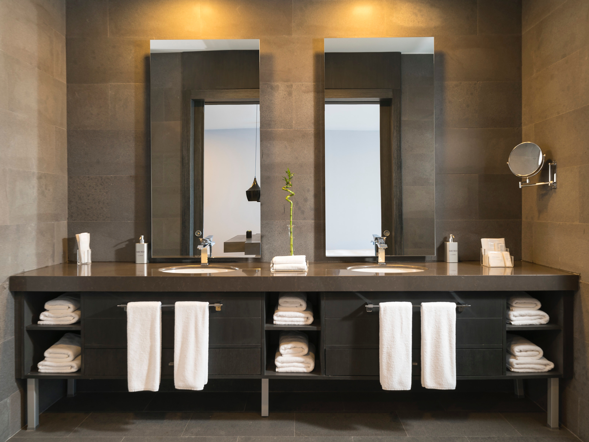